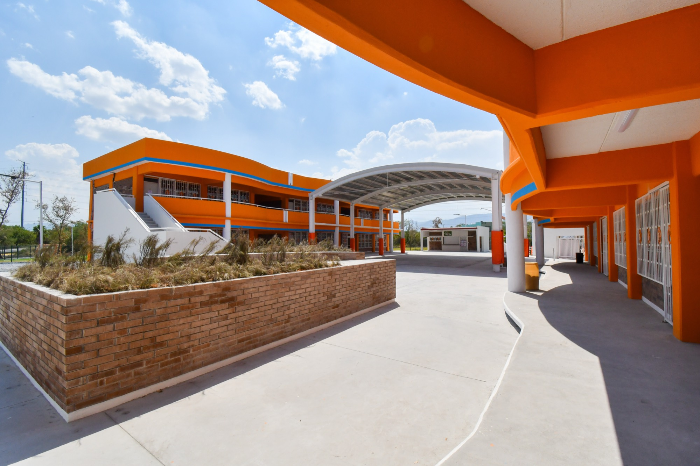
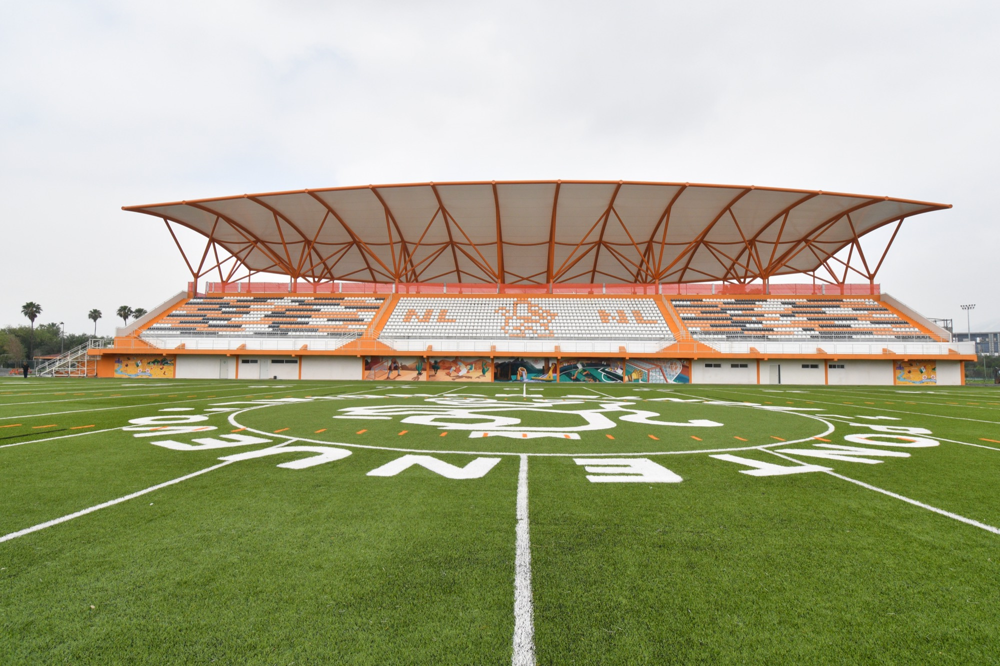
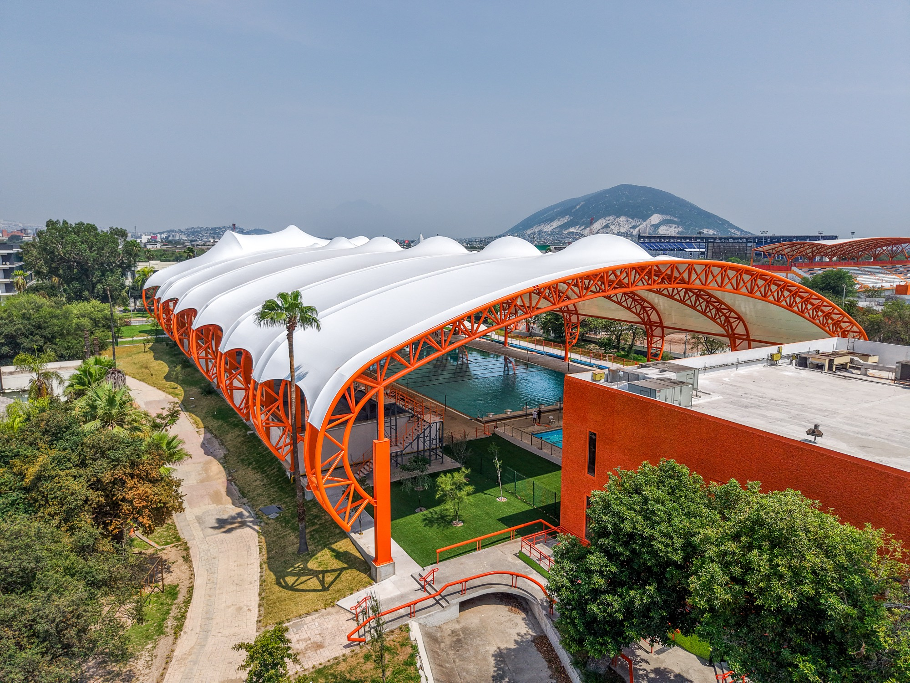
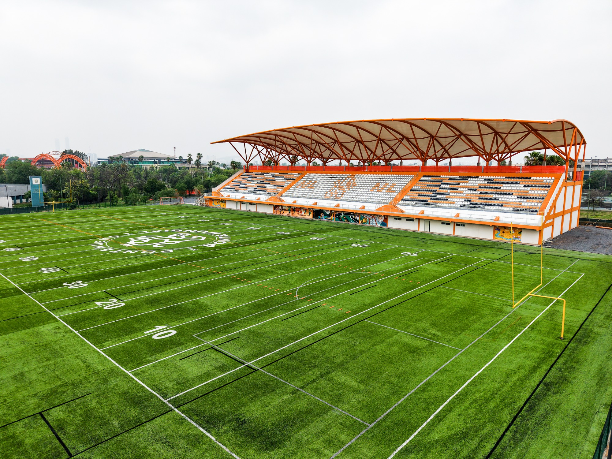
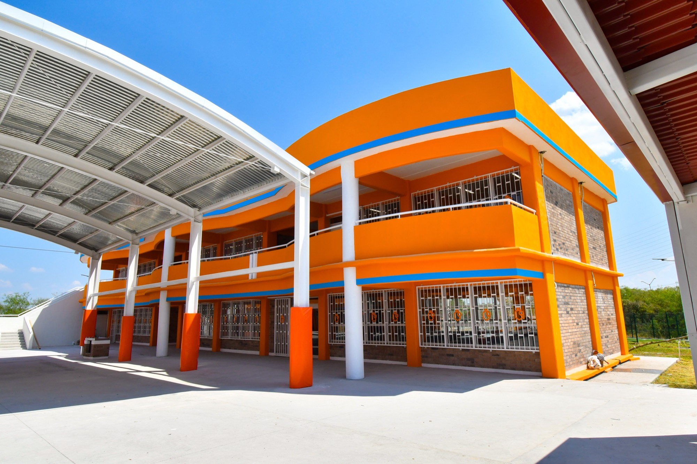
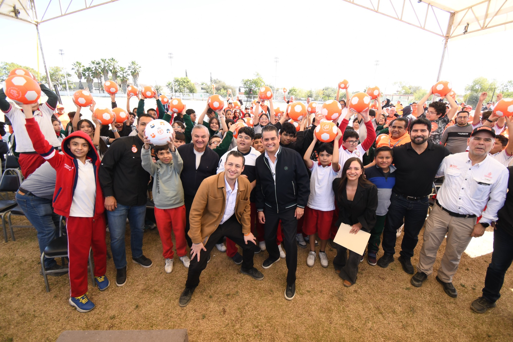

Escuelas rehabilitadas
Resultados 2026
Cobertura total en 51 municipios




Nuevas escuelas, canchas y nuevos espacios en beneficio de miles de estudiantes de Nuevo León.
La Fábrica de Escuelas del ICIFED llevó la infraestructura educativa y deportiva a otro nivel en menos de 5 años.
Nuevas escuelas y más de 600 nuevas canchas son el nuevo legado para Nuevo León.
Numeralia oficial
Metas superadas
Nuevo León es también número 1 por sus obras de infraestructura educativa y deportiva
Escuelas ampliadas
Nuevas escuelas
Nueva escuela por semana
Estudiantes beneficiados
Canchas de fútbol
Nuevo estadio de fútbol
De techumbre en el CARE
Nuevos centros comunitarios en 11 municipios
Familias beneficiadas
El nuevo legado de infraestructura educativa
Escuelas, deporte y comunidad

Escuelas
Planteles nuevos, dignos y de primer nivel
Aulas amplias e iluminadas, patios techados y espacios pensados para que niñas, niños y jóvenes aprendan mejor.
Deporte
Más de 600 canchas para jugar y crecer
Canchas de pasto sintético, gradas techadas, techumbres y albercas que convierten cada escuela en un punto de encuentro.

Comunidad
Obras que se entregan con la comunidad
Cada inauguración reúne a estudiantes, docentes y familias que ahora cuentan con espacios a la altura de sus sueños.
Porque una escuela nueva no solo cambia un espacio: abre posibilidades. Y por eso vamos a seguir poniendo a las niñas, niños y adolescentes al centro.
Septiembre 2026
En septiembre, una nueva escuela por semana
En las cuatro semanas de septiembre se entregaron cuatro escuelas recién remodeladas y equipadas en Juárez, Ciénega de Flores y Pesquería, N.L.
Registro fotográfico de obras entregadas